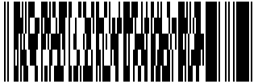

Here are a few challenges to keep you going. I have no desire or time to do this as a proper CTF with a web interface and whatnot right now but I may do that later in the year.
I've done a few categories again and hopefully they aren't too difficult. I tried to cover a variety of difficulty levels and offer reasonable points for each one.
There's something odd about this QR code...
image-1 - 50 ptsThis QR code looks a bit mangled. What happened when it was being transmitted? Try and fix it.
image-2 - 50 ptsFirst challenge: What the hell is this? Second challenge: What's wrong with it?
This image was recovered from a recent data dump but it won't open. What's wrong?
If only this damn app didn't quit so quickly. Maybe we can stop it doing that? Note: There are two point values available for this. You can either solve it the easy (cheating!) way or the hard way. Be honest, tell me what you did specifically. These are the resources I've got, I'm afraid.
eae8e7e7f1f8e6e9f5f8c2ece8f4fef6f8eee9c2ffefe8e9f8fbf2effef8e0
This flag has been ciphered with a single byte XOR key. Decrypt it.
crypto-1 - 50 pts184efd1557e2144fef0e4fd81b54e80464eb0055e00a49fa
This flag has been ciphered with a 4 byte XOR key. A little harder, but computers are powerful now...